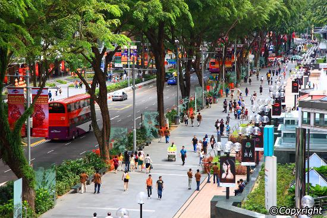

| Kampong Glam | Civic District | Singapore River |
|---|---|---|
 |
||
| Start your day with breakfast in Kampong Glam.Endless rows of eateries offeringIndian-Muslim creations abound here. Then explore Haji Lane which is littered with indie outlets that stock vintage clothing and knick-knacks. | Come midday, you'll want to make your way to the Civic District to have lunch at Raffles Hotel on Beach Road.Pop by The Halia for European plates with Asian touches. Then, pay a visit to the newly opened National Gallery Singapore to marvel at the world's largest public display of modern Southeast Asian art. | Just before dinner, hop on a traditional bumboat (operated by Singapore River Cruise).After that, hop off and head to Clarke Quay to check out its the colourful array of dining options and nightlife offerings. Afterwards, head to Highlander Bar and Restaurant for single malt whiskies and live music. |
| Joo Chiat | Chinatown | Tiong Bahru |
|---|---|---|
| For breakfast, pop by the Joo Chiat‘hood in the east for kaya (coconut jam) toast – a breakfast staple in Singapore– at Chin Mee Chin Confectionery. You can spend the rest of the morning exploring the area which is known as the'home of the Peranakans (Straits Chinese)'. | Make your way to Chinatown and head straight to Maxwell Food Centre for creations.For the rest of the afternoon,discover Chinatown on-foot.Must-sees – visit the majestic Buddha Tooth Relic Temple and Museum.Then, indulge in traditional Chinese desserts like bird's nest soup at Mei Heong Yuen Dessert – these treats make for a great afternoon snack. | Next, hop into a cab and go to Tiong Bahru in the evening for dinner and drinks. This may be one of Singapore’s oldest neighbourhoods,but it’s worth visiting to see how old meets new in this hip area. |
| Singapore Botanic Gardens | Orchard Road | Bugis Street Market |
|---|---|---|
|  | ||
| Begin your day with a visit to the Singapore Botanic Gardens. Enjoy lush gardens, peace and tranquility at this 150-year-old green destination | After spending the morning amidst the gardens, switch the pace up a little and head to one of Singapore’s major shopping districts, like Orchard Road. Drop by places like Paragon for luxury brands like Gucci and – if you like thrift shopping. The Marmalade Pantry at ION Orchard serves up excellent Western creations. | Next up is the Bugis and Little India neighbourhoods.There’s no where else quite like Bugis.What was a thriving district with a colourful past is now famed for its trendy Korean-themed stores and is a great place to score some shopping bargains. |
| Price List | |
|---|---|
| Numbers of people | Usual Price |
| Single | $1500 |
| Dual | $2000 |
| Triple | $4000 |
| Four and above | $1800 for each |